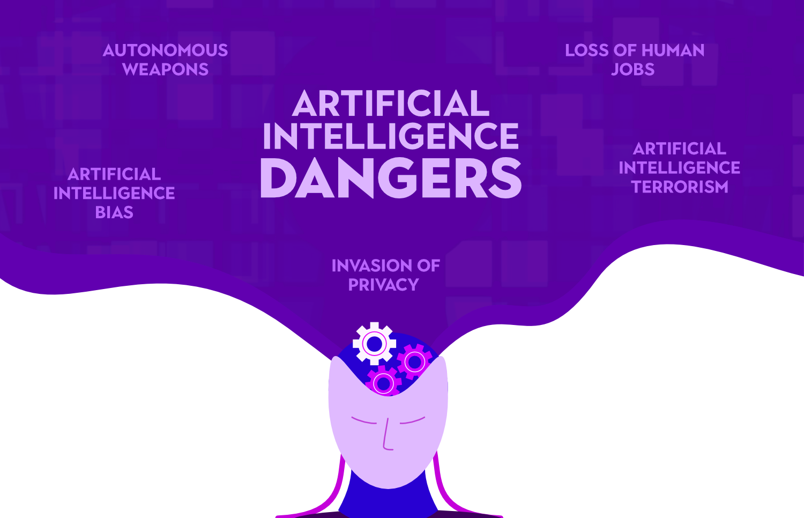
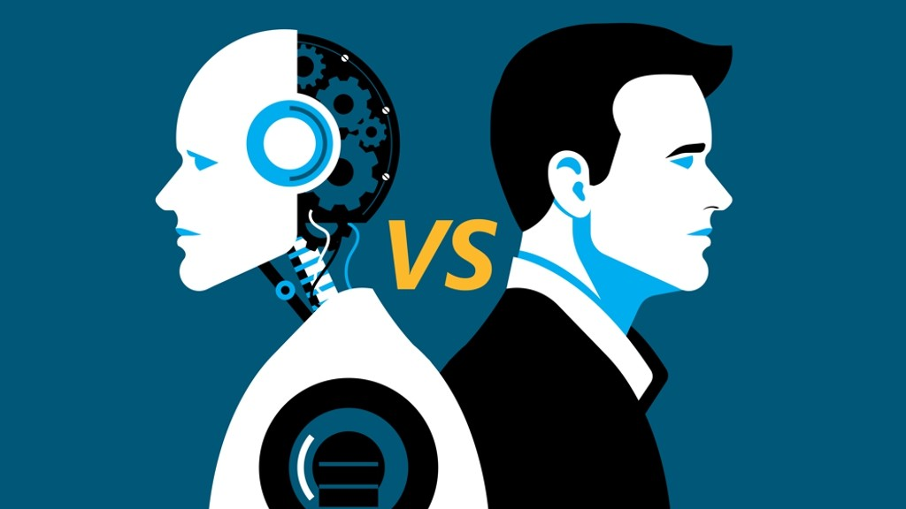

Artificial intelligence (AI) is the intelligence of machines or software, as opposed to the intelligence of
humans or animals. It is also the field of study in computer science that develops and studies intelligent
machines. "AI" may also refer to the machines themselves.
AI technology is widely used throughout industry, government and science. Some high-profile applications are:
advanced web search engines (e.g., Google Search), recommendation systems (used by YouTube, Amazon, and
Netflix), understanding human speech (such as Siri and Alexa), self-driving cars (e.g., Waymo), generative or
creative tools (ChatGPT and AI art), and competing at the highest level in strategic games (such as chess and
Go).
Artificial intelligence was founded as an academic discipline in 1956. The field went through multiple cycles of
optimism followed by disappointment and loss of funding, but after 2012, when deep learning surpassed all
previous AI techniques, there was a vast increase in funding and interest.
The various sub-fields of AI research are centered around particular goals and the use of particular tools. The
traditional goals of AI research include reasoning, knowledge representation, planning, learning, natural
language processing, perception, and support for robotics. General intelligence (the ability to solve an
arbitrary problem) is among the field's long-term goals. To solve these problems, AI researchers have adapted
and integrated a wide range of problem-solving techniques, including search and mathematical optimization,
formal logic, artificial neural networks, and methods based on statistics, operations research, and economics.
AI also draws upon psychology, linguistics, philosophy, neuroscience and many other fields.


Here’s Why AI May Be Extremely Dangerous—Whether It’s Conscious or Not
Artificial intelligence algorithms will soon reach a point of rapid self-improvement that threatens our
ability to control them and poses great potential risk to humanity.
“The idea that this stuff could actually get smarter than people.... I thought it was way off…. Obviously, I no
longer think that,” Geoffrey Hinton, one of Google's top artificial intelligence scientists, also known as “the
godfather of AI,” said after he quit his job in April so that he can warn about the dangers of this technology.
He’s not the only one worried. A 2023 survey of AI experts found that 36 percent fear that AI development may
result in a “nuclear-level catastrophe.” Almost 28,000 people have signed on to an open letter written by the
Future of Life Institute, including Steve Wozniak, Elon Musk, the CEOs of several AI companies and many other
prominent technologists, asking for a six-month pause or a moratorium on new advanced AI development.
As a researcher in consciousness, I share these strong concerns about the rapid development of AI, and I am a
co-signer of the Future of Life open letter.
Why are we all so concerned? In short: AI development is going way too fast.
The key issue is the profoundly rapid improvement in conversing among the new crop of advanced "chatbots," or
what are technically called “large language models” (LLMs). With this coming “AI explosion,” we will probably
have just one chance to get this right.
If we get it wrong, we may not live to tell the tale. This is not hyperbole.
This rapid acceleration promises to soon result in “artificial general intelligence” (AGI), and when that
happens, AI will be able to improve itself with no human intervention. It will do this in the same way that, for
example, Google’s AlphaZero AI learned how to play chess better than even the very best human or other AI chess
players in just nine hours from when it was first turned on. It achieved this feat by playing itself millions of
times over.
A team of Microsoft researchers analyzing OpenAI’s GPT-4, which I think is the best of the new advanced chatbots
currently available, said it had, "sparks of advanced general intelligence" in a new preprint paper.
In testing GPT-4, it performed better than 90 percent of human test takers on the Uniform Bar Exam, a
standardized test used to certify lawyers for practice in many states. That figure was up from just 10 percent
in the previous GPT-3.5 version, which was trained on a smaller data set. They found similar improvements in
dozens of other standardized tests.
Most of these tests are tests of reasoning. This is the main reason why Bubeck and his team concluded that GPT-4
“could reasonably be viewed as an early (yet still incomplete) version of an artificial general intelligence
(AGI) system.”
This pace of change is why Hinton told the New York Times: "Look at how it was five years ago and how it is now.
Take the difference and propagate it forwards. That’s scary.” In a mid-May Senate hearing on the potential of
AI, Sam Altman, the head of OpenAI called regulation “crucial.”
Some argue that these LLMs are just automation machines with zero consciousness, the implication being that if
they’re not conscious they have less chance of breaking free from their programming. Even if these language
models, now or in the future, aren’t at all conscious, this doesn’t matter. For the record, I agree that it’s
unlikely that they have any actual consciousness at this juncture—though I remain open to new facts as they come
in.
Regardless, a nuclear bomb can kill millions without any consciousness whatsoever. In the same way, AI could
kill millions with zero consciousness, in a myriad ways, including potentially use of nuclear bombs either
directly (much less likely) or through manipulated human intermediaries (more likely).
So, the debates about consciousness and AI really don’t figure very much into the debates about AI safety.
Yes, language models based on GPT-4 and many other models are already circulating widely. But the moratorium
being called for is to stop development of any new models more powerful than 4.0—and this can be enforced, with
force if required. Training these more powerful models requires massive server farms and energy. They can be
shut down.
My ethical compass tells me that it is very unwise to create these systems when we know already we won’t be able
to control them, even in the relatively near future. Discernment is knowing when to pull back from the edge. Now
is that time.
.jpeg)